Warning
This documentation is in construction.
6 Animations Editor¶
Probably, the most common animations in Phaser games are the so-called sprite-animations or frame-based animations.
Animation:

Animation frames:
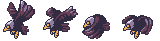In Phaser v3, the animations are created as global objects, in the animations manager:
You can create a single animation:
this.anims.create({
"key": "acorn",
"frameRate": 12,
"repeat": -1,
"frames": [
{
"key": "atlas",
"frame": "acorn-1"
},
{
"key": "atlas",
"frame": "acorn-2"
},
{
"key": "atlas",
"frame": "acorn-3"
}
]
});
Or multiple animations:
this.anims.fromJSON(
"anims": [
{
"key": "acorn",
// ....
},
{
"key": "player",
// ....
}
]
);
The common is to create the animations once in the game, probably in the preloader scene. Later, you can play an animation on a sprite object passing the animation key to the play(..) method:
mySprite.play("acorn");
Other way to create the animations is packing them all in a single JSON file, and load the file using the this.load.animation(..) method:
this.load.animations("my-anims", "assets/animations.json");
Phaser Editor 2D provides the Animations Editor, to create the animations JSON file. So, the workflow is very simple:
- Create the animations JSON file with the Animations Editor.
- Import the animations JSON file into an Asset Pack file with the Asset Pack Editor.
- Play the animations in your code, with the play(..) method.
6.1 Create the animations file¶
The default project template contains an animations file, but you can create other animations file with the File → New → Animations File menu option, or pressing the New button of the main toolbar and selecting the Animations File option. It opens the New Animations File wizard.
The wizard contains two pages, one for setting the file location and name and other for select the asset pack file to import the file (optional).
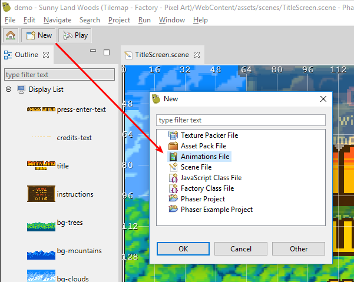 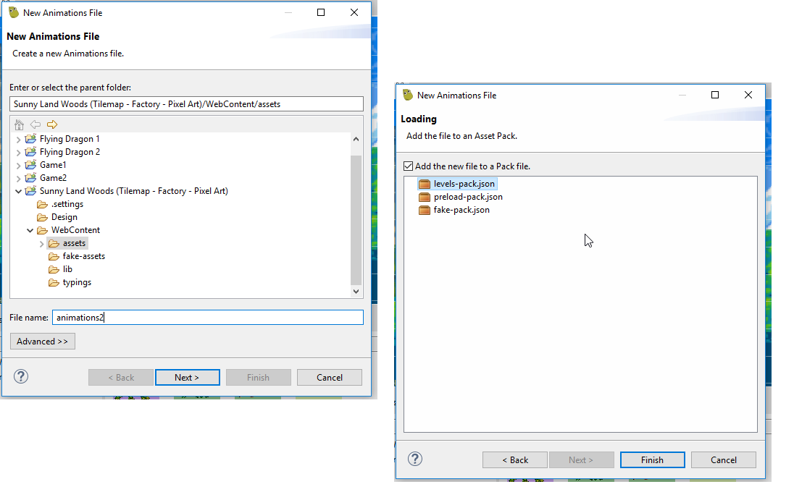6.2 Adding animations to the file¶
To create a new, empty animation, press the Add Animation button in the toolbar. It shows a dialog to enter the animation name.
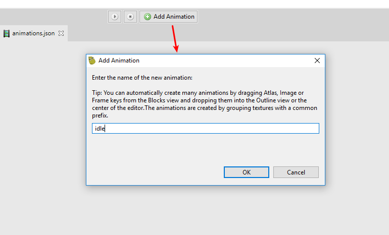The new animation is empty, so you have to add some frames to it. The frames (or better said, the frame keys) could be dragged from the Assets view or the Blocks view and dropped into the animation timeline.
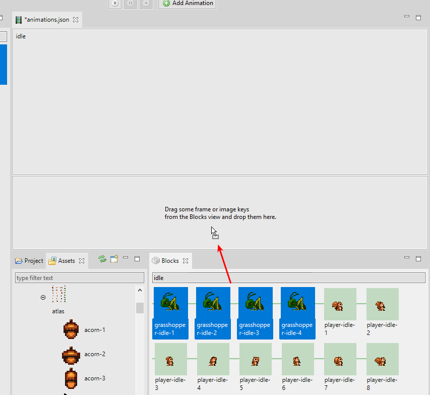 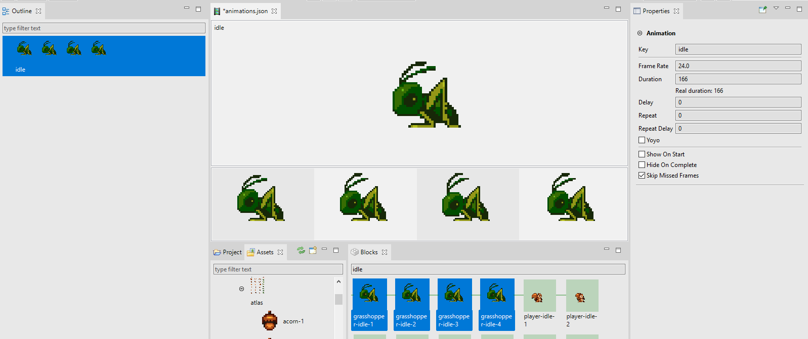6.2.1 Automatic creation of animations¶
Usually, artists name the frames of the animations with a certain pattern, something like this:
player-jump-1player-jump-2player-jump-3player-idle-1player-idle-2player-idle-3enemy_idle01enemy_idle02enemy_idle03enemy_attack01enemy_attack02enemy_attack03
There are different patterns, but the common is to use some common prefix for the frames of the same animation, with a numeric suffix.
The Animations Editor takes advantage of these naming patterns and uses an algorithm to create multiple animations with a given set of frames. The algorithm is simple, it groups all the frames with a common prefix and creates an animation for each group, with group frames. The prefix of a frame is extracted by removing all non-alphabetic chars at the end of the name.
For example, the prefix of enemy_idle02 is enemy_idle, the prefix of player-jump-1 is player-jump. So, if we apply the algorithm to the frames listed before, you get the following groups:
- player-jump
player-jump-1player-jump-2player-jump-3
- player-idle
player-idle-1player-idle-2player-idle-3
- enemy_idle
enemy_idle01enemy_idle02enemy_idle03
- enemy_attack
enemy_attack01enemy_attack02enemy_attack03
So, the Animations Editor creates the animations player-jump, player-idle, enemy-idle and enemy-attack.
6.2.2 Create the animations by dropping frames¶
To create the animations, you can drag the frames from somewhere and drop them into:
- The Outline view.
- The center of the editor (if it is not showing a particular animation, because in that case, it will append the frames at the end of the animation).
The frames can be taken from:
- The Blocks view.
- The frames, atlas, sprite-sheet, image preview section of the Properties view.
- The Assets view.
If you drop an atlas or sprite-sheet, the editor will use all the frames inside them.
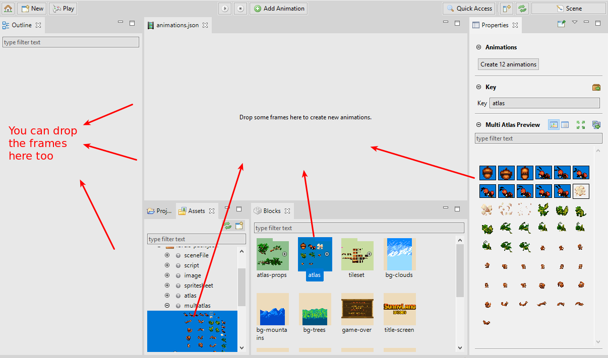
When the frames are dropped, the editor opens a dialog to enter a prefix for all the animations. It is useful if the frames use names like idle or attack but you want to organize them so you can use a prefix enemy to get the animations enemy-idle and enemy-attack. Sure, you can leave it blank.
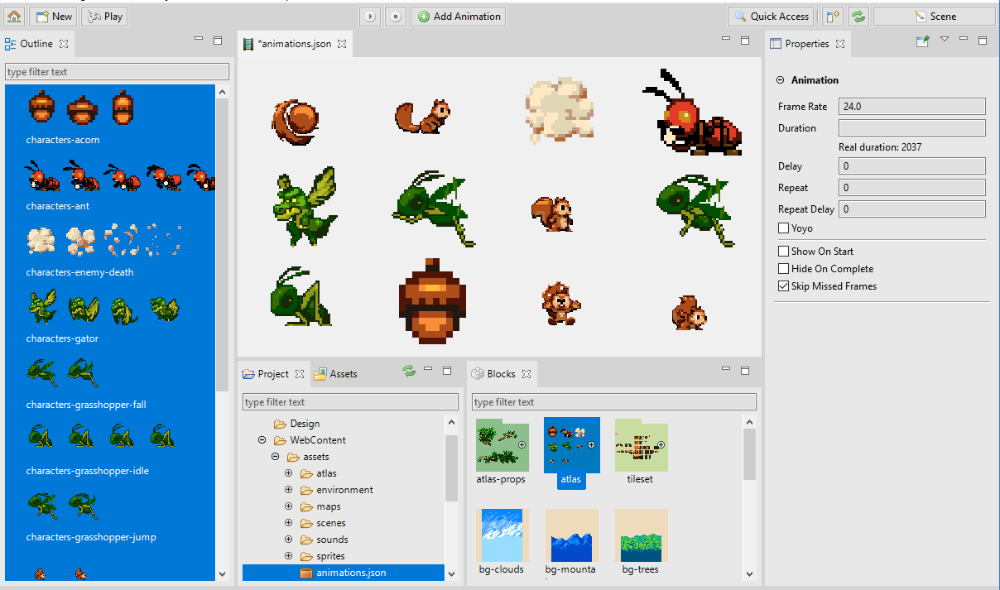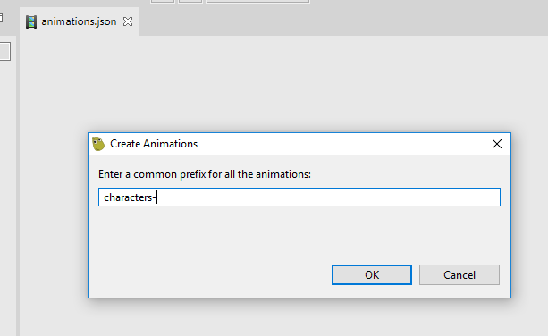
6.2.3 Creating the animations with the Create Animations button¶
When you select the frames in the Blocks view, the Properties view shows a Create animations button in the Animations section. The button’s text shows the number of animations could be created with the selection, and the button’s tooltip shows the names.
Like when you drop the frames, if you press the button, it opens a dialog to write a prefix for all the animations and finally create the animations.
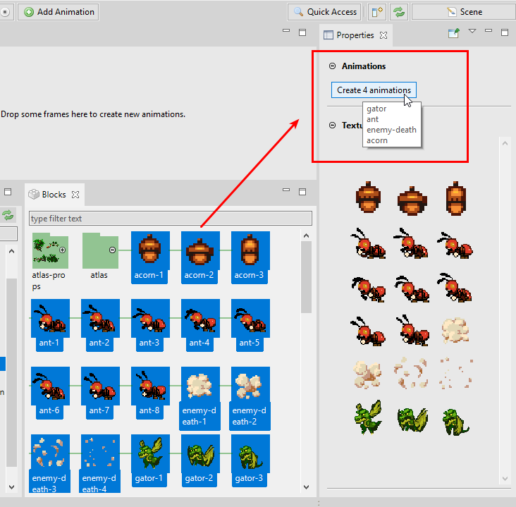6.3 Animations Editor layout¶
The editor presents the animations in two layouts:
Single animation layout. When you select just one animation. It shows the animation preview and the timeline. If you press the
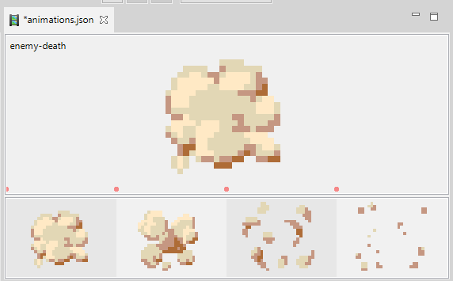Esckey, the animation is unselected and the editor shows all the animations.Multiple animations layout. When you select zero, or more than one animation. It shows the selected animations (or all the animations if the selection is empty) in a grid layout. Here you can click one animation to select it and therefore show it in the single animation layout.
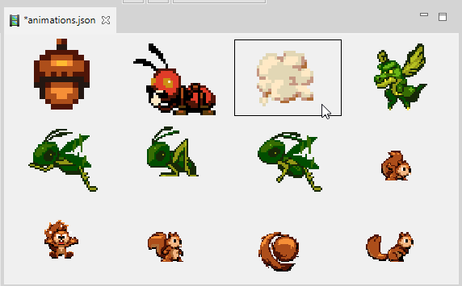
6.4 Playing the animations¶
When you select just one animation, the main toolbar shows the buttons to play, pause or stop the selected animation. When the animation is playing, the timeline shows a vertical line (or cursor) with the progress of the animation. You can press the Space key to play/pause the animation.
When you select multiple animations, the main toolbar shows the buttons to play or stop all the animations at the same time.
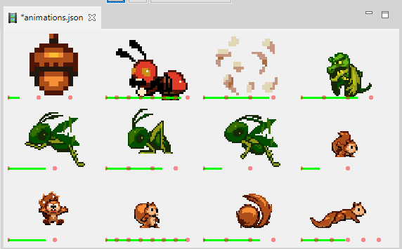6.5 Animation properties¶
The Properties view connects with the Animations Editor and display the properties of the animations or the animation frames.
You can change the properties of many animations or frames at the same time.
Animation properties
| Key | The key that the animation will be associated with. i.e. sprite.animations.play(key). |
| Frame Rate | The frame rate of playback in frames per second (default 24 if duration is null) |
| Duration | How long the animation should play for in milliseconds. If not given its derived from frameRate. |
| Delay | Delay before starting playback. Value given in milliseconds. |
| Repeat | Number of times to repeat the animation (-1 for infinity) |
| Repeat Delay | Delay before the animation repeats. Value given in milliseconds. |
| Yoyo | Should the animation yoyo? (reverse back down to the start) before repeating? |
| Show On Start | Should sprite.visible = true when the animation starts to play? |
| Hide On Complete | Should sprite.visible = false when the animation finishes? |
| Skip Missed Frames | Skip frames if the time lags, or always advanced anyway? |
6.5.1 Animation frame properties¶
When you select a frame the Properties view show its properties and you can change some of them.
| Duration | Additional time (in ms) that this frame should appear for during playback. |
| Real Duration | It is a Phaser Editor 2D, read-only property. It shows the total duration of the frame (the animation frameRate duration plus the extra time set in the duration property). |
| Texture Key | It is a Phaser Editor 2D, read-only property. It shows the key of the frame texture. |
Also, the Properties view shows a preview of the frame texture.
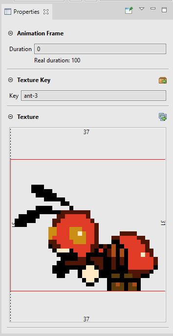6.6 Animation timeline¶
When you select a single animation, the Animations Editor shows a preview canvas and a timeline. The preview canvas displays the animation when you play it, the timeline shows the animation frames.
The timeline allows to add more frames to the animation, delete the frames or modify the frame properties.
6.6.1 Adding frames to the timeline¶
To add frames to the timeline you can drag texture frames (atlases, atlas frames, sprite-sheets, sprite-sheet frames, images) from the Blocks view or the Assets view and drop them into the timeline.
If the timeline contains frames, you can insert the new frames at any position.
Also, you can drop the frames on the animation preview canvas, in that case, the frames are appended to the timeline.
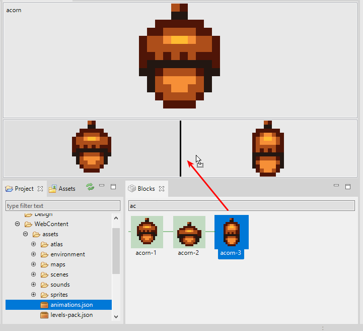6.6.2 Other timeline operations¶
You can modify the timeline in different ways:
- Change the order of frames by dragging them.
- Delete the selected frames (
Deletekey or Delete context menu option). - Zoom in/out of the images, by rolling the mouse wheel while pressing one of these keys:
Ctrl,AltorShift.
6.7 Blocks view¶
The Blocks view is a general purpose view that connects with the Animations Editor and shows all the available Asset Pack keys related to textures and texture frames.
You can drag the textures from the Blocks view and drop them on:
- The Animations Editor center area to create multiple animations or append the frames to the selected animation.
- The timeline to insert new frames.
- The Outline view to create multiple animations.
The Blocks view allows to zoom in/out and filter the content by its name.
6.8 Outline view¶
The Outline view is a workbench view that connects with the Animations Editor and lists all the animations.
You can select one or many animations, to play them or modify their properties. Also, you can delete the selected frames by pressing the Delete key or using the context menu.
Another function of the Outline view is as a drop-place to create new animations, by dropping frames on it.
This view, like many other visual elements of the IDE, can be zoomed in/out (mouse wheel plus one of the keys Ctrl, Alt or Shift) and you can filter its content by the key of the animations.
6.9 Keyboard shortcuts¶
These are the keyboard shortcuts of the Animations Editor:
| Delete animations or frames | Delete |
| Play/pause the animation | Space |
| Undo | Ctrl+Z |
| Redo | Ctrl+Y |